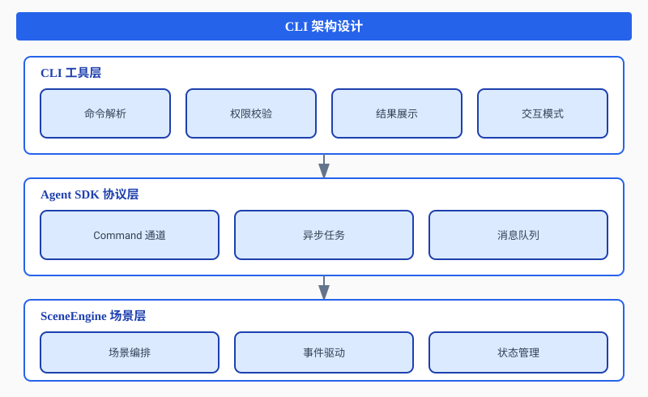
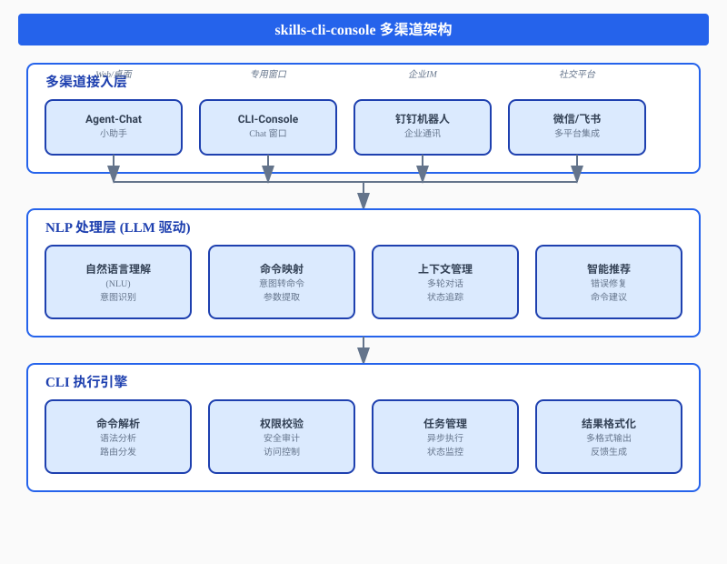

1. OoderAgent 有什么用？
1.1 核心定位
Ooder Agent SDK 是一个面向南向协议实现的轻量级 Agent SDK，提供完整的 Agent 生命周期管理、能力编排、场景管理和协议适配功能。它解决了企业级应用中 Agent 系统的核心痛点：
- Agent 管理: 完整的 Agent 生命周期管理
- 能力编排: Story/Will 编排引擎
- 场景管理: Scene 和 SceneGroup 管理
- 协议适配: A2A、REACH 南向协议支持
- 技能框架: 技能加载、生成和运行时支持
- LLM 集成: 结构化输出、工具调用增强、激活引导、Token配额管理
- 负载均衡: 内置负载均衡和故障转移服务
1.2 架构特点
agent-sdk (父工程) 3.0.3
├── llm-sdk # LLM SDK
├── skills-framework # 技能框架
├── agent-sdk-core # 核心实现
├── agent-sdk-cli # CLI 工具
└── agent-sdk-spring-boot-starter # Spring Boot Starter1.3 典型应用场景
| 场景 | 描述 | 价值 |
|---|---|---|
| 智能客服系统 | 多 Agent 协作的客服场景 | 提升响应效率 60% |
| 知识库管理 | RAG 技能的安装和管理 | 知识检索准确率 95% |
| 协作会议 | 场景化的会议 Agent 协作 | 会议效率提升 40% |
| 数据分析 | 多技能编排的数据处理 | 分析周期缩短 50% |
2. 为什么要做一个 CLI？
2.1 痛点分析
在没有 CLI 工具之前，开发者面临以下问题：
- 操作复杂: 需要编写代码或调用 API 才能管理 Agent
- 调试困难: 缺乏实时交互和状态查看能力
- 效率低下: 重复性操作需要大量编码工作
- 学习成本高: 需要深入了解 SDK 内部机制
2.2 CLI 的核心价值
2.2.1 提升开发效率
# 传统方式：需要编写 Java 代码
OoderSDK sdk = OoderSDK.builder()
.agentId("my-agent")
.agentName("My Agent")
.build();
WorkerAgent worker = sdk.getAgentFactory()
.createWorkerAgent("scene-001", "worker-1", "skill-001");
worker.execute("capability-id", params);
# CLI 方式：一行命令搞定
ooder skill:install --source ./my-skill.jar
ooder skill:start --skill-id my-skill
ooder skill exec my-skill:process --input data.json2.2.2 降低学习门槛
CLI 提供了直观的命令体系和帮助系统，新用户可以快速上手：
# 查看帮助
ooder --help
# 查看特定命令的用法
ooder skill:install --help
# 列出所有技能
ooder skill:list2.2.3 支持自动化运维
CLI 可以轻松集成到 CI/CD 流程中：
#!/bin/bash
# 自动化部署脚本
# 安装技能
ooder skill:install --source $SKILL_URL --force
# 启动技能
ooder skill:start --skill-id $SKILL_ID
# 创建场景
ooder scene:create --group-id production --main $MAIN_CAPABILITY
# 验证状态
ooder status2.3 CLI 架构设计

3. 如何配置 CLI？
3.1 Maven 依赖配置
3.1.1 添加依赖
在项目的 pom.xml 中添加以下依赖：
<dependency>
<groupId>net.ooder</groupId>
<artifactId>agent-sdk-cli</artifactId>
<version>3.0.3</version>
</dependency>3.1.2 完整的 pom.xml 示例
<?xml version="1.0" encoding="UTF-8"?>
<project xmlns="http://maven.apache.org/POM/4.0.0"
xmlns:xsi="http://www.w3.org/2001/XMLSchema-instance"
xsi:schemaLocation="http://maven.apache.org/POM/4.0.0
http://maven.apache.org/xsd/maven-4.0.0.xsd">
<modelVersion>4.0.0</modelVersion>
<groupId>com.example</groupId>
<artifactId>my-agent-app</artifactId>
<version>1.0.0</version>
<dependencies>
<!-- Agent SDK CLI -->
<dependency>
<groupId>net.ooder</groupId>
<artifactId>agent-sdk-cli</artifactId>
<version>3.0.3</version>
</dependency>
<!-- Agent SDK Core -->
<dependency>
<groupId>net.ooder</groupId>
<artifactId>agent-sdk-core</artifactId>
<version>3.0.3</version>
</dependency>
<!-- Skills Framework -->
<dependency>
<groupId>net.ooder</groupId>
<artifactId>skills-framework</artifactId>
<version>3.0.3</version>
</dependency>
</dependencies>
</project>3.2 配置文件设置
3.2.1 CLI 配置文件 (cli-config.yml)
在 src/main/resources 目录下创建 cli-config.yml：
# Ooder CLI Configuration
ooder:
cli:
# 安全配置
security:
enabled: true
whitelist-enabled: true
injection-check-enabled: true
dangerous-chars-check-enabled: true
audit-enabled: true
# 命令白名单
whitelist:
- skill:list
- skill:info
- skill:install
- skill:uninstall
- skill:update
- skill:start
- skill:stop
- skill:exec
- scene:list
- scene:create
- scene:info
- scene:invoke
- scene:event
- task:list
- task:status
- status
- help
# 敏感字段
sensitive-keys:
- password
- secret
- token
- key
- api-key
- credential
- auth
- private-key
- access-token
- refresh-token
# 安全检测正则表达式
dangerous-chars-pattern: "[;|&$`\\{}\\[\\]\\(\\)\\*\\?<>]"
sql-injection-pattern: "(\\b(SELECT|INSERT|UPDATE|DELETE|DROP|CREATE|ALTER|EXEC|UNION)\\b)|(--|#|/\\*)"
script-injection-pattern: "<script|javascript:|on\\w+\\s*="
# 输出配置
output:
default-format: text
color-enabled: true
# 交互式配置
interactive:
enabled: true
history-size: 1000
history-file: "${user.home}/.ooder/cli-history"
prompt: "ooder> "
# 任务配置
task:
default-timeout: 60
cleanup-interval: 3600
max-concurrent: 103.2.2 Spring Boot 配置 (application.yml)
ooder:
sdk:
enabled: true
agent-id: my-agent
agent-name: My Agent
agent-type: WORKER
endpoint: http://localhost:8080
discovery-enabled: true
heartbeat-interval: 300003.3 代码集成
3.3.1 Spring Boot 集成方式
@SpringBootApplication
public class AgentApplication {
@Bean
public OoderCli ooderCli(SkillRegistry skillRegistry,
SkillInstaller skillInstaller,
SkillInvoker skillInvoker,
CollaborativeSceneGroupManager sceneGroupManager) {
OoderCli cli = OoderCli.builder()
.skillRegistry(skillRegistry)
.skillInstaller(skillInstaller)
.skillInvoker(skillInvoker)
.sceneGroupManager(sceneGroupManager)
.build();
cli.initializeAdapters();
return cli;
}
public static void main(String[] args) {
SpringApplication.run(AgentApplication.class, args);
}
}3.3.2 独立应用集成方式
public class StandaloneCliApp {
public static void main(String[] args) {
// 创建 SDK 实例
OoderSDK sdk = OoderSDK.builder()
.agentId("cli-agent")
.agentName("CLI Agent")
.build();
// 创建 CLI 实例
OoderCli cli = OoderCli.builder()
.skillRegistry(sdk.getSkillRegistry())
.skillInstaller(sdk.getSkillInstaller())
.skillInvoker(sdk.getSkillInvoker())
.sceneGroupManager(sdk.getSceneGroupManager())
.build();
// 初始化适配器
cli.initializeAdapters();
// 运行 CLI
int exitCode = cli.run(args);
System.exit(exitCode);
}
}3.4 本地 Maven 仓库配置
本地 Maven 地址: D:\maven\.m2
在 settings.xml 中配置：
<settings>
<localRepository>D:\maven\.m2</localRepository>
<mirrors>
<mirror>
<id>aliyun</id>
<mirrorOf>central</mirrorOf>
<name>Aliyun Maven Mirror</name>
<url>https://maven.aliyun.com/repository/public</url>
</mirror>
</mirrors>
</settings>4. 如何快速上手 CLI？
4.1 安装和构建
4.1.1 从源码构建
# 克隆仓库
git clone https://github.com/oodercn/ooder-sdk.git
cd ooder-sdk
# 编译安装
mvn clean install -DskipTests
# 构建 CLI 模块
cd agent-sdk/agent-sdk-cli
mvn clean package4.1.2 运行 CLI
# 方式1: 直接运行主类
java -cp target/agent-sdk-cli-3.0.3.jar net.ooder.sdk.cli.OoderCli
# 方式2: 进入交互式模式
java -cp target/agent-sdk-cli-3.0.3.jar net.ooder.sdk.cli.OoderCli
# 方式3: 执行单个命令
java -cp target/agent-sdk-cli-3.0.3.jar net.ooder.sdk.cli.OoderCli skill:list4.2 交互式模式
4.2.1 启动交互式 CLI
$ java -cp target/agent-sdk-cli-3.0.3.jar net.ooder.sdk.cli.OoderCli
Ooder Agent SDK CLI v3.1.0
Type 'help' for available commands or 'exit' to quit.
ooder>4.2.2 基本操作
# 查看帮助
ooder> help
# 查看系统状态
ooder> status
# 列出所有技能
ooder> skill:list
# 安装技能
ooder> skill:install --source ./my-skill.jar
# 启动技能
ooder> skill:start --skill-id my-skill
# 退出
ooder> exit4.3 命令行模式
4.3.1 单次命令执行
# 列出所有技能
java -cp ... net.ooder.sdk.cli.OoderCli skill:list
# 安装技能
java -cp ... net.ooder.sdk.cli.OoderCli skill:install --source ./skill.jar
# 查看技能详情
java -cp ... net.ooder.sdk.cli.OoderCli skill:info --skill-id rag-skill
# 创建场景
java -cp ... net.ooder.sdk.cli.OoderCli scene:create --group-id meeting-001 --main video-call4.3.2 输出格式控制
# JSON 格式输出
java -cp ... net.ooder.sdk.cli.OoderCli skill:list --output json
# 表格格式输出
java -cp ... net.ooder.sdk.cli.OoderCli skill:list --output table
# 详细输出
java -cp ... net.ooder.sdk.cli.OoderCli skill:list --verbose4.4 快速实战案例
4.4.1 案例1: 安装并运行 RAG 技能
# 步骤1: 安装 RAG 技能
ooder skill:install --source https://repo.ooder.cn/skills/rag-skill-1.0.0.jar
# 步骤2: 查看安装结果
ooder skill:list --status INSTALLED
# 步骤3: 启动技能
ooder skill:start --skill-id rag-skill
# 步骤4: 执行技能命令
ooder skill exec rag-skill:reindex --knowledgeBase ./docs
# 步骤5: 查询任务状态
ooder task:status --task-id <task-id>4.4.2 案例2: 创建协作场景
# 步骤1: 创建场景组
ooder scene:create --group-id meeting-001 \
--main video-call \
--collaborative whiteboard,screen-share,chat
# 步骤2: 查看场景信息
ooder scene:info --group-id meeting-001
# 步骤3: 调用场景能力
ooder scene:invoke --group-id meeting-001 \
--capability video-call:start \
--participants user1,user2,user3
# 步骤4: 发布场景事件
ooder scene:event --group-id meeting-001 \
--event-type participant.joined \
--user user45. 如何使用 skills-cli-console 结合 LLM 快速熟悉 CLI 命令？
5.1 skills-cli-console 简介
apexos 1.0.5 版本默认支持了 skills-cli-console 能力，这是一个革命性的 CLI 交互增强工具。通过发现和安装 cli-console 能力后，您可以在多个平台上完成 CLI 操作：
- agent-chat 小助手: 内置的智能对话助手
- cli-console chat 窗口: 专用的 CLI 对话界面
- 钉钉集成: 通过钉钉机器人进行 CLI 操作
- 微信集成: 通过微信公众号/企业微信进行 CLI 操作
- 飞书集成: 通过飞书机器人进行 CLI 操作
5.2 skills-cli-console 架构设计

5.3 安装和配置 skills-cli-console
5.3.1 自动发现和安装
apexos 1.0.5 会自动发现 cli-console 能力：
# 方式1: 通过 agent-chat 小助手
用户: "帮我安装 cli-console 能力"
Agent: 正在为您安装 skills-cli-console...
✓ 安装成功
✓ 已启用 cli-console 能力
您现在可以通过对话方式执行 CLI 命令了！
# 方式2: 通过传统 CLI 命令
ooder skill:install --source skills-cli-console --auto-discover5.3.2 配置多渠道接入
# application.yml
ooder:
cli-console:
enabled: true
# Agent-Chat 配置
agent-chat:
enabled: true
welcome-message: "您好！我是 CLI 助手，可以通过对话帮您执行命令。"
# 钉钉集成配置
dingtalk:
enabled: true
webhook: ${DINGTALK_WEBHOOK}
secret: ${DINGTALK_SECRET}
at-all: false
# 微信集成配置
wechat:
enabled: true
corp-id: ${WECHAT_CORP_ID}
agent-id: ${WECHAT_AGENT_ID}
secret: ${WECHAT_SECRET}
# 飞书集成配置
feishu:
enabled: true
app-id: ${FEISHU_APP_ID}
app-secret: ${FEISHU_APP_SECRET}
# LLM 配置
llm:
enabled: true
provider: openai
model: gpt-4
temperature: 0.7
max-tokens: 20005.3 LLM 辅助功能
5.3.1 自然语言转命令
在 WebConsole 中，您可以使用自然语言描述需求，LLM 会自动转换为 CLI 命令：
# 用户输入自然语言
用户: "我想安装一个 RAG 技能"
# LLM 转换为命令
LLM 建议: ooder skill:install --source <rag-skill-url>
# 用户确认后执行
ooder> skill:install --source https://repo.ooder.cn/skills/rag-skill-1.0.0.jar5.3.2 智能命令补全
# 用户输入部分命令
ooder> skill:i
# LLM 提供补全建议
[1] skill:info - 查看技能详情
[2] skill:install - 安装技能
[3] skill:invoke - 调用技能能力
# 用户选择或继续输入
ooder> skill:install --source ./my-skill.jar5.3.3 错误诊断与修复
# 用户输入错误命令
ooder> skill:install my-skill.jar
# CLI 返回错误
错误: 缺少必需参数 --source
# LLM 提供修复建议
LLM 建议: 您可能想要执行以下命令：
ooder skill:install --source my-skill.jar
是否执行建议的命令？(y/n)5.4 实战示例
5.4.1 示例1: 通过自然语言创建场景
# 用户输入
用户: "创建一个包含视频通话和白板的协作场景"
# LLM 解析并生成命令
LLM 分析:
- 场景类型: 协作场景
- 主要能力: 视频通话
- 协作能力: 白板
生成命令:
ooder scene:create --group-id collab-001 \
--main video-call \
--collaborative whiteboard
# 执行命令
ooder> scene:create --group-id collab-001 --main video-call --collaborative whiteboard
场景组创建成功:
- Group ID: collab-001
- Main Capability: video-call
- Collaborative Capabilities: [whiteboard]
- Status: CREATED5.4.2 示例2: 智能技能推荐
# 用户描述需求
用户: "我需要一个能够处理文档检索和问答的技能"
# LLM 分析并推荐
LLM 推荐:
基于您的需求，推荐以下技能：
[1] rag-skill (v1.2.0)
- 文档检索与问答
- 支持多种文档格式
- 内置向量检索引擎
[2] qa-skill (v2.0.0)
- 智能问答系统
- 支持多轮对话
- 知识图谱集成
选择要安装的技能 (1-2): 1
# 安装推荐的技能
ooder> skill:install --source https://repo.ooder.cn/skills/rag-skill-1.2.0.jar5.5 WebConsole 使用技巧
5.5.1 快捷键
| 快捷键 | 功能 |
|---|---|
Tab |
自动补全命令 |
Ctrl+Space |
触发 LLM 建议 |
Ctrl+L |
清屏 |
Ctrl+C |
取消当前命令 |
↑/↓ |
浏览历史命令 |
Ctrl+R |
搜索历史命令 |
5.5.2 命令模板
WebConsole 提供常用命令模板，可通过 LLM 智能填充：
# 模板1: 技能安装
ooder> template skill-install
请输入技能源地址: https://repo.ooder.cn/skills/my-skill.jar
是否强制安装? (y/n): y
生成命令: ooder skill:install --source https://repo.ooder.cn/skills/my-skill.jar --force
# 模板2: 场景创建
ooder> template scene-create
请输入场景组ID: meeting-001
请输入主要能力: video-call
请输入协作能力(逗号分隔): whiteboard,chat
生成命令: ooder scene:create --group-id meeting-001 --main video-call --collaborative whiteboard,chat6. 常见 CLI 命令列表
6.1 命令分类总览
ooder
├── Core Commands (核心命令)
│ ├── skill:list # 列出所有 Skills
│ ├── skill:info # 查看 Skill 详情
│ ├── skill:install # 安装 Skill
│ ├── skill:uninstall # 卸载 Skill
│ ├── skill:start # 启动 Skill
│ ├── skill:stop # 停止 Skill
│ ├── skill:update # 更新 Skill
│ └── skill exec # 执行 Skill 命令
│
├── Scene Commands (场景命令)
│ ├── scene:create # 创建场景
│ ├── scene:list # 列出场景
│ ├── scene:info # 查看场景详情
│ ├── scene:invoke # 调用场景能力
│ └── scene:event # 发布场景事件
│
├── Task Commands (任务命令)
│ ├── task:list # 列出所有任务
│ └── task:status # 查询任务状态
│
└── System Commands (系统命令)
├── status # 查看系统状态
└── help # 查看帮助6.2 详细命令说明
6.2.1 Skill 命令
| 命令 | 用法 | 说明 | 示例 |
|---|---|---|---|
skill:list |
ooder skill:list [--status <status>] [--type <type>] |
列出所有已安装的技能 | ooder skill:list --status RUNNING |
skill:info |
ooder skill:info --skill-id <id> |
查看技能详细信息 | ooder skill:info --skill-id rag-skill |
skill:install |
ooder skill:install --source <path|url> [--force] |
安装技能 | ooder skill:install --source ./skill.jar |
skill:uninstall |
ooder skill:uninstall --skill-id <id> |
卸载技能 | ooder skill:uninstall --skill-id rag-skill |
skill:start |
ooder skill:start --skill-id <id> |
启动技能 | ooder skill:start --skill-id rag-skill |
skill:stop |
ooder skill:stop --skill-id <id> |
停止技能 | ooder skill:stop --skill-id rag-skill |
skill:update |
ooder skill:update --skill-id <id> --source <path|url> |
更新技能 | ooder skill:update --skill-id rag-skill --source ./skill-v2.jar |
skill exec |
ooder skill exec <skill-id>:<command> [options] |
执行技能扩展命令 | ooder skill exec rag-skill:reindex --knowledgeBase ./docs |
6.2.2 Scene 命令
| 命令 | 用法 | 说明 | 示例 |
|---|---|---|---|
scene:create |
ooder scene:create --group-id <id> --main <capability> [--collaborative <cap1,cap2,...>] |
创建场景组 | ooder scene:create --group-id meeting-001 --main video-call --collaborative whiteboard,chat |
scene:list |
ooder scene:list [--status <status>] |
列出所有场景 | ooder scene:list --status ACTIVE |
scene:info |
ooder scene:info --group-id <id> |
查看场景详情 | ooder scene:info --group-id meeting-001 |
scene:invoke |
ooder scene:invoke --group-id <id> --capability <cap-id> [options] |
调用场景能力 | ooder scene:invoke --group-id meeting-001 --capability video-call:start --participants user1,user2 |
scene:event |
ooder scene:event --group-id <id> --event-type <type> [options] |
发布场景事件 | ooder scene:event --group-id meeting-001 --event-type participant.joined --user user3 |
6.2.3 Task 命令
| 命令 | 用法 | 说明 | 示例 |
|---|---|---|---|
task:list |
ooder task:list [--status <status>] |
列出所有任务 | ooder task:list --status RUNNING |
task:status |
ooder task:status --task-id <id> |
查询任务状态 | ooder task:status --task-id task-12345 |
6.2.4 System 命令
| 命令 | 用法 | 说明 | 示例 |
|---|---|---|---|
status |
ooder status |
查看系统状态 | ooder status |
help |
ooder help [command] |
查看帮助信息 | ooder help skill:install |
6.3 全局选项
| 选项 | 简写 | 说明 | 示例 |
|---|---|---|---|
--verbose |
-v |
显示详细输出 | ooder skill:list --verbose |
--quiet |
-q |
静默模式 | ooder skill:install --source ./skill.jar --quiet |
--output |
-o |
输出格式 (text/json/table) | ooder skill:list --output json |
--help |
-h |
显示帮助信息 | ooder skill:install --help |
--version |
显示版本信息 | ooder --version |
6.4 命令权限矩阵
| 角色 | 核心命令 | 场景命令 | 任务命令 | 扩展命令 |
|---|---|---|---|---|
| installer | ✅ 全部 | ❌ | ❌ | ❌ |
| admin | ✅ 全部 | ✅ 全部 | ✅ 全部 | ✅ 白名单内 |
| leader | ✅ view | ✅ 全部 | ✅ 全部 | ✅ 白名单内 |
| collaborator | ✅ view | ✅ view/invoke | ✅ view | ❌ |
总结
Ooder Agent SDK CLI 是一个强大而灵活的命令行工具，它极大地简化了 Agent 系统的管理和运维工作。通过本文的实战指南，您应该已经掌握了：
- OoderAgent 的核心价值: Agent 生命周期管理、能力编排、场景管理等
- CLI 的必要性: 提升效率、降低门槛、支持自动化
- 配置方法: Maven 依赖、配置文件、代码集成
- 快速上手: 交互式模式、命令行模式、实战案例
- WebConsole + LLM: 自然语言交互、智能推荐、错误诊断
- 命令体系: 完整的命令列表和使用方法
相关资源
- GitHub 仓库: https://github.com/oodercn/ooder-sdk
- Maven Central: https://central.sonatype.com/artifact/net.ooder/agent-sdk
- 本地 Maven 仓库:
D:\maven\.m2 - 架构设计文档: e:\github\ooder-sdk\skill\docs\architecture\04-cli-design\README.md
- CLI 配置示例: e:\github\ooder-sdk\agent-sdk\agent-sdk-cli\src\main\resources\cli-config.yml